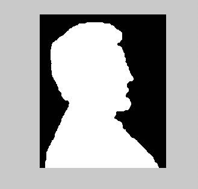
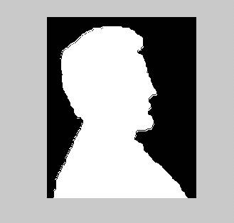
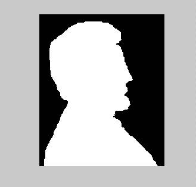

Morphological Image Processing
Todd Goldfinger
01/24/03
Goal: To implement binary dilation and erosion
with a 3x3 structuring element.
I implemented these algorithms in
matlab. Neither implementation follows
the strict
definitions
of dilation and erosion. But they
should behave the same as the definitions
as
long as the structuring element is smaller than the object. If the object is very small,
erosion
will completely remove it. All images
are required to be binary (1 - white, 0 black).
And
the origin will always be at the center of the structuring element. I ran one erosion
and
one dilation on figure 9.14a as a demonstration. I used the following element for both
dilation
and erosion.
Structure
= [1 1 1
0 1 1
0 0 1]
It
is clear where the image has been eroded.
It is more difficult to tell what happened with
dilation. But, you should be able to see the extra
'mass' at the end of the nose. And the
area
where
the hair meets the forehead has filled in some.
Fig. 1
Top) The original image with threshold at 1.
Middle) Eroded image.
Bottom) Dilated image.



Below
is some more matlab code to perform some routine set functions.
Although,
these could in principle be used in dilation and erosion, none
were
used in my implementation.